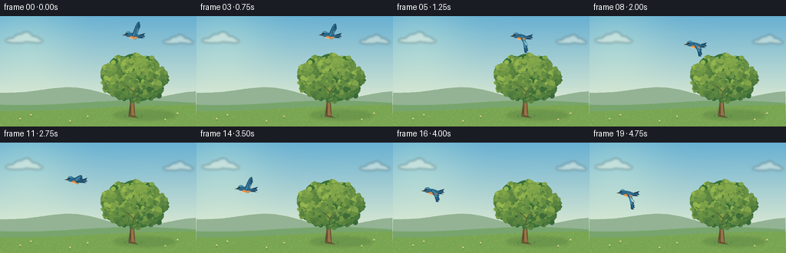
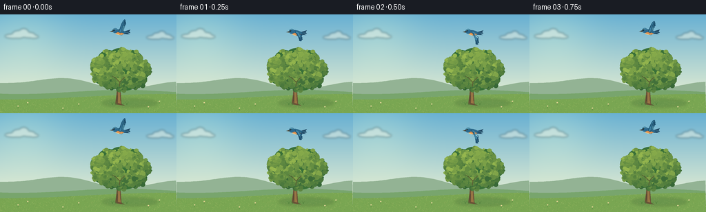

CODING AGENTS AS PIXEL WORLD MODELS
traex/GPT-6.1-Sol · dynamic_spatial_relationship_0044
点击播放 · 原生 RGB 像素
逐轮保存的候选
回放视频、检查图与代码变化。
每份候选均可单独播放。实际图片检查记录在下方工具轨迹中。
候选 01播放与检查图
点击播放 · 原生 RGB 像素


展开代码变化
--- 上一保存版本
+++ 本次保存版本
@@ -0,0 +1,146 @@
+from pathlib import Path
+import json, math
+import numpy as np
+from PIL import Image, ImageDraw, ImageFilter
+import artifact_io
+
+ROOT=Path(__file__).resolve().parent
+SPEC=json.loads((ROOT/'task_spec.json').read_text())
+W,H=SPEC['width'],SPEC['height']
+S=4
+rng=np.random.default_rng(29)
+
+def ellipse(d,box,fill):
+ d.ellipse(tuple(round(v*S) for v in box),fill=fill)
+def poly(d,points,fill):
+ d.polygon([(round(x*S),round(y*S)) for x,y in points],fill=fill)
+def line(d,points,fill,width=1):
+ d.line([(round(x*S),round(y*S)) for x,y in points],fill=fill,width=max(1,round(width*S)),joint='curve')
+def curve(points,n=24):
+ p=np.array(points,float)
+ t=np.linspace(0,1,n)[:,None]
+ return ((1-t)**3*p[0]+3*(1-t)**2*t*p[1]+3*(1-t)*t*t*p[2]+t**3*p[3]).tolist()
+def shape(d,segs,fill):
+ pts=[]
+ for s in segs:pts.extend(curve(s))
+ poly(d,pts,fill)
+
+# Soft, luminous painted sky and meadow.
+y,x=np.mgrid[0:H*S,0:W*S]; yy=y/S; xx=x/S
+z=np.clip(yy/112,0,1)[...,None]
+top=np.array([104,176,210]); bottom=np.array([219,233,210])
+bg=top*(1-z)+bottom*z
+glow=np.exp(-((xx-35)**2+(yy-25)**2)/(2*42**2))[...,None]
+bg=np.clip(bg+glow*np.array([23,16,3]),0,255)
+base=Image.fromarray(bg.astype('uint8'),'RGB')
+cloud=Image.new('RGBA',base.size); cd=ImageDraw.Draw(cloud)
+for cx,cy,sc in [(31,30,.8),(232,32,.65)]:
+ for ox,oy,rx,ry in [(-14,2,16,4),(-5,-1,12,7),(4,-4,9,8),(13,0,12,5),(22,3,9,3)]:
+ ellipse(cd,(cx+(ox-rx)*sc,cy+(oy-ry)*sc,cx+(ox+rx)*sc,cy+(oy+ry)*sc),(252,250,231,107))
+cloud=cloud.filter(ImageFilter.GaussianBlur(1.6*S)); base=Image.alpha_composite(base.convert('RGBA'),cloud).convert('RGB')
+d=ImageDraw.Draw(base)
+poly(d,[(0,106)]+[(a,100-6*math.sin(a/41)+3*math.sin(a/22)) for a in range(0,257,3)]+[(256,144),(0,144)],(147,179,148))
+poly(d,[(0,115)]+[(a,113+3*math.sin(a/48+1)) for a in range(0,257,3)]+[(256,144),(0,144)],(120,165,109))
+# closer gently rolling field
+poly(d,[(0,125)]+[(a,120+4*math.sin(a/75+1.5)) for a in range(0,257,3)]+[(256,144),(0,144)],(121,166,82))
+# field texture, warm natural colour variation
+for _ in range(1700):
+ gx=rng.uniform(0,256); gy=rng.uniform(114,144)
+ if gy<120+4*math.sin(gx/75+1.5):continue
+ c=[(150,183,93),(109,151,73),(167,188,107),(128,163,79)][int(rng.integers(4))]
+ line(d,[(gx,gy),(gx+rng.uniform(-1.4,1.4),gy-rng.uniform(.3,1.6))],c,.24)
+shadow=Image.new('RGBA',base.size); sd=ImageDraw.Draw(shadow)
+ellipse(sd,(148,123,228,135),(54,94,54,56))
+shadow=shadow.filter(ImageFilter.GaussianBlur(2*S));base=Image.alpha_composite(base.convert('RGBA'),shadow).convert('RGB')
+
+# Organic oak-like crown, fixed cluster locations and varied leaf texture.
+clusters=[(148,84,15,14),(145,74,14,12),(157,67,16,15),(174,63,17,14),(191,67,16,15),(205,80,14,14),(197,94,16,13),(180,98,21,13),(163,95,19,14),(151,89,17,14),(182,81,24,20)]
+leaves=[]
+for cx,cy,rx,ry in clusters:
+ for _ in range(95):
+ ang=rng.uniform(0,2*math.pi); rad=math.sqrt(rng.uniform(0,1))
+ lx=cx+math.cos(ang)*rx*rad;ly=cy+math.sin(ang)*ry*rad
+ r=rng.uniform(1.0,3.7)
+ # Shaded underneath; sun entering from upper left.
+ light=np.clip(.60-(lx-cx)/rx*.17-(ly-cy)/ry*.27+rng.normal(0,.12),0,1)
+ c=tuple(np.round(np.array([40,90,51])*(1-light)+np.array([149,182,78])*light).astype(int))
+ leaves.append((lx,ly,r,rng.uniform(.65,1.1),c))
+
+def tree(im,t):
+ d=ImageDraw.Draw(im)
+ # tapered trunk and exposed limbs
+ poly(d,[(167,131),(169,116),(170,100),(166,89),(168,86),(174,101),(176,130),(181,133)],(104,81,54))
+ poly(d,[(171,129),(171,108),(170,94),(172,98),(174,117),(175,130)],(153,116,69))
+ poly(d,[(171,111),(157,94),(151,88),(153,86),(163,95),(173,104)],(104,80,51))
+ poly(d,[(173,106),(185,91),(195,86),(195,89),(185,98),(175,113)],(97,78,51))
+ poly(d,[(171,102),(177,84),(178,72),(180,73),(180,89),(175,105)],(117,88,52))
+ line(d,[(170,118),(169.5,126)],(79,66,48),.7)
+ line(d,[(174,114),(174.3,126)],(117,85,52),.5)
+ # Cluster foundation creates a continuous crown rather than isolated dots.
+ sway=.30*math.sin(t*1.1)
+ for cx,cy,rx,ry in clusters:
+ ellipse(d,(cx-rx+sway,cy-ry,cx+rx+sway,cy+ry),(57,112,56))
+ for lx,ly,r,aspect,c in leaves:
+ sx=sway*(.5+(.5*(105-ly)/55))
+ ellipse(d,(lx-r+sx,ly-r*aspect,lx+r+sx,ly+r*aspect),c)
+ # Narrow openings reveal branch structure.
+ line(d,[(173,105),(174,98),(181,91)],(89,88,49),1)
+ line(d,[(174,99),(167,92),(163,90)],(88,85,47),.8)
+ # small grass tufts and wildflowers, anchoring trunk in the meadow
+ for gx,gy in [(163,132),(168,132),(178,133),(184,132)]:
+ for a in [-1,0,1]:line(d,[(gx,gy),(gx+a*2,gy-3-abs(a))],(78,127,58),.5)
+
+# A recognizable blue-and-russet songbird, animated with two feathered wings.
+def bird(im,bx,by,phase):
+ d=ImageDraw.Draw(im)
+ flap=math.cos(phase)
+ # Local drawing coordinates; bird faces left, moving leftward.
+ def p(pts):return [(bx+a,by+b) for a,b in pts]
+ def po(pts,col):poly(d,p(pts),col)
+ def li(pts,col,w=.5):line(d,p(pts),col,w)
+ def sh(segs,col):shape(d,[p(s) for s in segs],col)
+ # farther wing, lighter through aerial haze
+ ext=-13*flap
+ sh([[(-1,-1),(1,-4),(4,ext-4),(7,ext-4)],[(7,ext-4),(10,ext-1),(8,ext+2),(4,1)],[(4,1),(2,3),(0,2),(-1,-1)]],(66,125,149))
+ # Tail fan, with individual tips.
+ po([(5,0),(15,-3),(13,-.2),(15,1.7),(11,2.7),(14,4),(5,3.5)],(31,71,99))
+ li([(7,1),(12.7,1)],(77,136,159),.65)
+ # Body silhouette with a curved chest and a long smooth back.
+ sh([[(-8,-2),(-3,-5),(5,-2),(9,1)],[(9,1),(5,5),(-3,5),(-7,2)],[(-7,2),(-9,1),(-9,-1),(-8,-2)]],(43,104,138))
+ sh([[(-8,0),(-5,1),(2,1),(6,3)],[(6,3),(1,6),(-6,5),(-8,0)]],(217,140,77))
+ sh([[(-7,2),(-3,4),(0,4),(3,3.8)],[(3,3.8),(0,5.3),(-5,5),(-7,2)]],(243,197,127))
+ # Head and beak, high contrast eye highlight.
+ ellipse(d,(bx-11,by-5,bx-3,by+2),(43,104,140))
+ sh([[(-10,-3),(-9,-5),(-6,-5),(-4,-3)],[(-4,-3),(-7,-4),(-9,-3),(-10,-3)]],(90,156,175))
+ po([(-10.3,-1.8),(-15,-.3),(-10.4,.6)],(55,51,42))
+ li([(-14,-.3),(-10,-.1)],(153,128,79),.3)
+ ellipse(d,(bx-9.8,by-3,bx-8.1,by-1.3),(12,25,28))
+ ellipse(d,(bx-9.45,by-2.8,bx-8.96,by-2.3),(249,247,213))
+ # Near wing pivots at shoulder, its primaries fan out at full extension.
+ v=-15*flap
+ sh([[(-2,-1),(0,-4),(3,v-3),(7,v-3)],[(7,v-3),(8,v-2),(8,v-1),(7,v)],[(7,v),(8.8,v+1),(9,v+2),(7.1,v+2.5)],[(7.1,v+2.5),(10,v+3.2),(9,v+4.5),(6,v+4.5)],[(6,v+4.5),(9,v+6),(7,v+7),(4,v+6)],[(4,v+6),(3,5),(-1,3),(-2,-1)]],(29,79,110))
+ sh([[(-1,-1),(1,-3),(4,v-2),(6.4,v-2)],[(6.4,v-2),(5,v+1),(3,v+3),(1,1)],[(1,1),(0,2),(-1,1),(-1,-1)]],(58,129,163))
+ for k in range(3):
+ li([(1.2+k*.65,0),(5.7+k*.4,v+1.3+k*1.5)],(81,149,174),.36)
+ # tiny tucked feet
+ li([(-1,4),(2,5),(3.5,4.5)],(78,58,44),.45)
+
+frames=[]
+for i in range(SPEC['frames']):
+ t=i/SPEC['fps']
+ im=base.copy();tree(im,t)
+ # Establish "above" for the first second; then an easy descending arc to the left.
+ u=np.clip((i-3)/14,0,1)
+ ease=u*u*(3-2*u)
+ bx=174-124*ease
+ by=25+40*ease+1.1*math.sin(i*1.1)
+ bird(im,bx,by,i*1.82+.2)
+ # Foreground flowers, subtle and stationary.
+ d=ImageDraw.Draw(im)
+ for gx,gy in [(26,137),(40,132),(91,140),(215,138),(231,130),(114,134)]:
+ line(d,[(gx,gy),(gx+.4,gy-3)],(87,131,62),.4)
+ ellipse(d,(gx-.8,gy-4.2,gx+1.1,gy-2.7),(242,232,182))
+ ellipse(d,(gx-.1,gy-3.7,gx+.5,gy-3.1),(217,170,63))
+ frames.append(np.asarray(im.resize((W,H),Image.Resampling.LANCZOS),dtype=np.uint8))
+artifact_io.save(np.stack(frames),ROOT)
+print('Saved',len(frames),'RGB frames at',W,H)
可观测工具轨迹
实际执行的命令与返回图片。
命令 1exit 0
/bin/bash -lc 'ls -la; cat prompt.txt; cat GENERATION_RULES.md; cat task_spec.json'
命令 2exit 0
/bin/bash -lc 'cat artifact_io.py'
命令 3exit 0
/bin/bash -lc "cat > generate.py <<'PY'
from pathlib import Path
import json, math
import numpy as np
from PIL import Image, ImageDraw, ImageFilter
import artifact_io
ROOT=Path(__file__).resolve().parent
SPEC=json.loads((ROOT/'task_spec.json').read_text())
W,H=SPEC['width'],SPEC['height']
S=4
rng=np.random.default_rng(29)
def ellipse(d,box,fill):
d.ellipse(tuple(round(v*S) for v in box),fill=fill)
def poly(d,points,fill):
d.polygon([(round(x*S),round(y*S)) for x,y in points],fill=fill)
def line(d,points,fill,width=1):
d.line([(round(x*S),round(y*S)) for x,y in points],fill=fill,width=max(1,round(width*S)),joint='curve')
def curve(points,n=24):
p=np.array(points,float)
t=np.linspace(0,1,n)[:,None]
return ((1-t)**3*p[0]+3*(1-t)**2*t*p[1]+3*(1-t)*t*t*p[2]+t**3*p[3]).tolist()
def shape(d,segs,fill):
pts=[]
for s in segs:pts.extend(curve(s))
poly(d,pts,fill)
# Soft, luminous painted sky and meadow.
y,x=np.mgrid[0:H*S,0:W*S]; yy=y/S; xx=x/S
z=np.clip(yy/112,0,1)[...,None]
top=np.array([104,176,210]); bottom=np.array([219,233,210])
bg=top*(1-z)+bottom*z
glow=np.exp(-((xx-35)**2+(yy-25)**2)/(2*42**2))[...,None]
bg=np.clip(bg+glow*np.array([23,16,3]),0,255)
base=Image.fromarray(bg.astype('uint8'),'RGB')
cloud=Image.new('RGBA',base.size); cd=ImageDraw.Draw(cloud)
for cx,cy,sc in [(31,30,.8),(232,32,.65)]:
for ox,oy,rx,ry in [(-14,2,16,4),(-5,-1,12,7),(4,-4,9,8),(13,0,12,5),(22,3,9,3)]:
ellipse(cd,(cx+(ox-rx)*sc,cy+(oy-ry)*sc,cx+(ox+rx)*sc,cy+(oy+ry)*sc),(252,250,231,107))
cloud=cloud.filter(ImageFilter.GaussianBlur(1.6*S)); base=Image.alpha_composite(base.convert('RGBA'),cloud).convert('RGB')
d=ImageDraw.Draw(base)
poly(d,[(0,106)]+[(a,100-6*math.sin(a/41)+3*math.sin(a/22)) for a in range(0,257,3)]+[(256,144),(0,144)],(147,179,148))
poly(d,[(0,115)]+[(a,113+3*math.sin(a/48+1)) for a in range(0,257,3)]+[(256,144),(0,144)],(120,165,109))
# closer gently rolling field
poly(d,[(0,125)]+[(a,120+4*math.sin(a/75+1.5)) for a in range(0,257,3)]+[(256,144),(0,144)],(121,166,82))
# field texture, warm natural colour variation
for _ in range(1700):
gx=rng.uniform(0,256); gy=rng.uniform(114,144)
if gy<120+4*math.sin(gx/75+1.5):continue
c=[(150,183,93),(109,151,73),(167,188,107),(128,163,79)][int(rng.integers(4))]
line(d,[(gx,gy),(gx+rng.uniform(-1.4,1.4),gy-rng.uniform(.3,1.6))],c,.24)
shadow=Image.new('RGBA',base.size); sd=ImageDraw.Draw(shadow)
ellipse(sd,(148,123,228,135),(54,94,54,56))
shadow=shadow.filter(ImageFilter.GaussianBlur(2*S));base=Image.alpha_composite(base.convert('RGBA'),shadow).convert('RGB')
# Organic oak-like crown, fixed cluster locations and varied leaf texture.
clusters=[(148,84,15,14),(145,74,14,12),(157,67,16,15),(174,63,17,14),(191,67,16,15),(205,80,14,14),(197,94,16,13),(180,98,21,13),(163,95,19,14),(151,89,17,14),(182,81,24,20)]
leaves=[]
for cx,cy,rx,ry in clusters:
for _ in range(95):
ang=rng.uniform(0,2*math.pi); rad=math.sqrt(rng.uniform(0,1))
lx=cx+math.cos(ang)*rx*rad;ly=cy+math.sin(ang)*ry*rad
r=rng.uniform(1.0,3.7)
# Shaded underneath; sun entering from upper left.
light=np.clip(.60-(lx-cx)/rx*.17-(ly-cy)/ry*.27+rng.normal(0,.12),0,1)
c=tuple(np.round(np.array([40,90,51])*(1-light)+np.array([149,182,78])*light).astype(int))
leaves.append((lx,ly,r,rng.uniform(.65,1.1),c))
def tree(im,t):
d=ImageDraw.Draw(im)
# tapered trunk and exposed limbs
poly(d,[(167,131),(169,116),(170,100),(166,89),(168,86),(174,101),(176,130),(181,133)],(104,81,54))
poly(d,[(171,129),(171,108),(170,94),(172,98),(174,117),(175,130)],(153,116,69))
poly(d,[(171,111),(157,94),(151,88),(153,86),(163,95),(173,104)],(104,80,51))
poly(d,[(173,106),(185,91),(195,86),(195,89),(185,98),(175,113)],(97,78,51))
poly(d,[(171,102),(177,84),(178,72),(180,73),(180,89),(175,105)],(117,88,52))
line(d,[(170,118),(169.5,126)],(79,66,48),.7)
line(d,[(174,114),(174.3,126)],(117,85,52),.5)
# Cluster foundation creates a continuous crown rather than isolated dots.
sway=.30*math.sin(t*1.1)
for cx,cy,rx,ry in clusters:
ellipse(d,(cx-rx+sway,cy-ry,cx+rx+sway,cy+ry),(57,112,56))
for lx,ly,r,aspect,c in leaves:
sx=sway*(.5+(.5*(105-ly)/55))
ellipse(d,(lx-r+sx,ly-r*aspect,lx+r+sx,ly+r*aspect),c)
# Narrow openings reveal branch structure.
line(d,[(173,105),(174,98),(181,91)],(89,88,49),1)
line(d,[(174,99),(167,92),(163,90)],(88,85,47),.8)
# small grass tufts and wildflowers, anchoring trunk in the meadow
for gx,gy in [(163,132),(168,132),(178,133),(184,132)]:
for a in [-1,0,1]:line(d,[(gx,gy),(gx+a*2,gy-3-abs(a))],(78,127,58),.5)
# A recognizable blue-and-russet songbird, animated with two feathered wings.
def bird(im,bx,by,phase):
d=ImageDraw.Draw(im)
flap=math.cos(phase)
# Local drawing coordinates; bird faces left, moving leftward.
def p(pts):return [(bx+a,by+b) for a,b in pts]
def po(pts,col):poly(d,p(pts),col)
def li(pts,col,w=.5):line(d,p(pts),col,w)
def sh(segs,col):shape(d,[p(s) for s in segs],col)
# farther wing, lighter through aerial haze
ext=-13*flap
sh([[(-1,-1),(1,-4),(4,ext-4),(7,ext-4)],[(7,ext-4),(10,ext-1),(8,ext+2),(4,1)],[(4,1),(2,3),(0,2),(-1,-1)]],(66,125,149))
# Tail fan, with individual tips.
po([(5,0),(15,-3),(13,-.2),(15,1.7),(11,2.7),(14,4),(5,3.5)],(31,71,99))
li([(7,1),(12.7,1)],(77,136,159),.65)
# Body silhouette with a curved chest and a long smooth back.
sh([[(-8,-2),(-3,-5),(5,-2),(9,1)],[(9,1),(5,5),(-3,5),(-7,2)],[(-7,2),(-9,1),(-9,-1),(-8,-2)]],(43,104,138))
sh([[(-8,0),(-5,1),(2,1),(6,3)],[(6,3),(1,6),(-6,5),(-8,0)]],(217,140,77))
sh([[(-7,2),(-3,4),(0,4),(3,3.8)],[(3,3.8),(0,5.3),(-5,5),(-7,2)]],(243,197,127))
# Head and beak, high contrast eye highlight.
ellipse(d,(bx-11,by-5,bx-3,by+2),(43,104,140))
sh([[(-10,-3),(-9,-5),(-6,-5),(-4,-3)],[(-4,-3),(-7,-4),(-9,-3),(-10,-3)]],(90,156,175))
po([(-10.3,-1.8),(-15,-.3),(-10.4,.6)],(55,51,42))
li([(-14,-.3),(-10,-.1)],(153,128,79),.3)
ellipse(d,(bx-9.8,by-3,bx-8.1,by-1.3),(12,25,28))
ellipse(d,(bx-9.45,by-2.8,bx-8.96,by-2.3),(249,247,213))
# Near wing pivots at shoulder, its primaries fan out at full extension.
v=-15*flap
sh([[(-2,-1),(0,-4),(3,v-3),(7,v-3)],[(7,v-3),(8,v-2),(8,v-1),(7,v)],[(7,v),(8.8,v+1),(9,v+2),(7.1,v+2.5)],[(7.1,v+2.5),(10,v+3.2),(9,v+4.5),(6,v+4.5)],[(6,v+4.5),(9,v+6),(7,v+7),(4,v+6)],[(4,v+6),(3,5),(-1,3),(-2,-1)]],(29,79,110))
sh([[(-1,-1),(1,-3),(4,v-2),(6.4,v-2)],[(6.4,v-2),(5,v+1),(3,v+3),(1,1)],[(1,1),(0,2),(-1,1),(-1,-1)]],(58,129,163))
for k in range(3):
li([(1.2+k*.65,0),(5.7+k*.4,v+1.3+k*1.5)],(81,149,174),.36)
# tiny tucked feet
li([(-1,4),(2,5),(3.5,4.5)],(78,58,44),.45)
frames=[]
for i in range(SPEC['frames']):
t=i/SPEC['fps']
im=base.copy();tree(im,t)
# Establish \"above\" for the first second; then an easy descending arc to the left.
u=np.clip((i-3)/14,0,1)
ease=u*u*(3-2*u)
bx=174-124*ease
by=25+40*ease+1.1*math.sin(i*1.1)
bird(im,bx,by,i*1.82+.2)
# Foreground flowers, subtle and stationary.
d=ImageDraw.Draw(im)
for gx,gy in [(26,137),(40,132),(91,140),(215,138),(231,130),(114,134)]:
line(d,[(gx,gy),(gx+.4,gy-3)],(87,131,62),.4)
ellipse(d,(gx-.8,gy-4.2,gx+1.1,gy-2.7),(242,232,182))
ellipse(d,(gx-.1,gy-3.7,gx+.5,gy-3.1),(217,170,63))
frames.append(np.asarray(im.resize((W,H),Image.Resampling.LANCZOS),dtype=np.uint8))
artifact_io.save(np.stack(frames),ROOT)
print('Saved',len(frames),'RGB frames at',W,H)
PY
python generate.py
ls -lh pixels.npz index.html inspection.png"保存候选 1 份；完成命令 3 次；可验证图片返回 0 张。原始 API 响应与完整日志保留在本地。